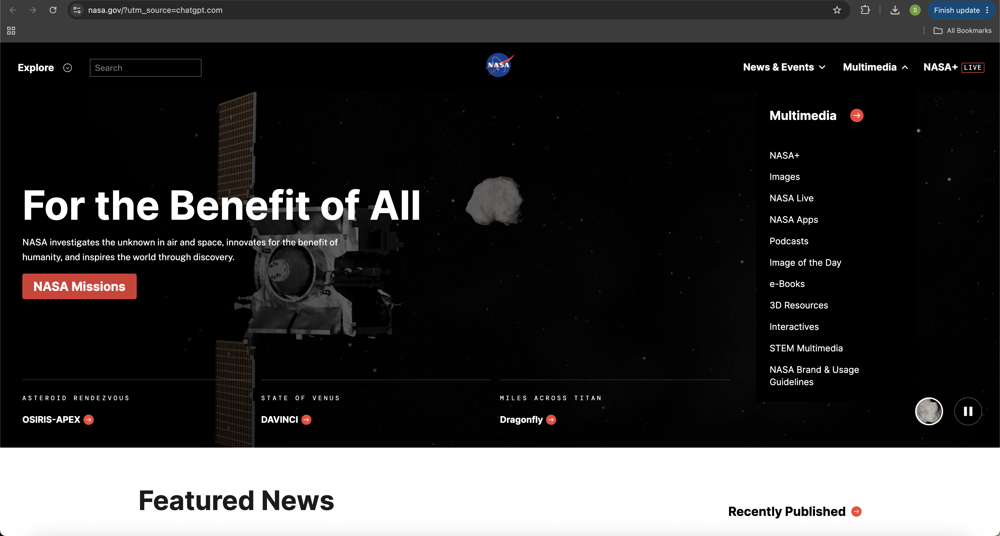

Website Screenshot

1. Website URL
2. Website Name
The website is called NASA.
3. Target Audience
I believe this website is for students, teachers, and people who are interested in space and science.
4. Website Organization
The website uses hierarchical organization. It has a homepage that has menus leading to other parts of website.
5. CRAP Design Principle
I noticed NASA uses contrast. The white text on the dark background makes the heading stand out and easier to read.
6. Accessibility Audit Score
I checked the website using AccessibilityChecker.org. NASA got 54 out of 100 and had 4 critical issues.
7. Effectiveness
I think the website is effective because people can find information about NASA missions, space, and news.
8. Efficiency
The search bar and navigation menu help users find information quickly without going through every page.
9. Engagement
I like the large space pictures and the way the website looks. It makes the website interesting to explore.
10. Recommendation
I think NASA should fix the accessibility problems found in the audit so the website is easier for everyone to use.